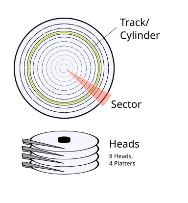

Legacy Legacy Legacy
“Compatibility means deliberately repeating other people’s mistakes.” - David Wheeler
When writing our bootloader, and especially in the first stages, we encounter a lot of legacy that needs to be handled. This legacy may come in multiple shapes, like bios interrupts, magic numbers and things that need to be initialized. Most of this work will be covered in this chapter.
Note: From now on, each of the code blocks will be structured as they are in the real project, and every time a code file will have a path in it, that will be the same path in the real project. For example, our first stage will be located in the bootloader/first_stage directory.
Our project structure will include the following directories:
- kernel -> For the kernel code, and booting stages.
- shared -> Shared crates that are relevant for multiple cases.
- build -> Build utilities, like targets, linker scripts and more.
The Cargo.toml in the root of the project will include a
workspacedefinition which will include all of the crates from our project.
Basic Initialization
At the start of our code, we want to zero out all of the memory segments in our machine, so all of the addresses that we will access will not be manipulated by the segments.
This manipulation can happen if the segments are not zeroed out, because certain instructions of the CPU will assume segments.
For example, the instruction mov, eax [0x1000] will assume address 0x1000 is prefixed by the ds register.
In 16bit real mode, the translation is as follows:
Physical address = (Segment * 0x10) + Specified Address
// For example, if we want to fetch data,
// and the data segment is 0x1000 and we want data at address 0x2000.
Final = 0x1000 * 0x10 + 0x2000
Which will result in the address 0x12000 instead of 0x2000
This technique results in a 20bit maximum address space instead of 16bit, which is 1MiB.
So, to zero down all the segments we will use the following code:
//; This will define a boot section for this asm code,
//; which we can put at the start of our binary.
.section .boot, "awx"
.global start
.code16
start:
//; Disable interrupts
cli
//; zero segment registers
xor ax, ax
mov ds, ax
mov es, ax
mov ss, ax
mov fs, ax
mov gs, ax
Then, we want to initialize the stack and the direction flag.
It is important to state the stack at a position that will not overwrite our code; if local variables are written to the same place as our code, it might cause a push instruction to overwrite an instruction that we need. because of this, we initialize the stack at 0x7c00 (31 KiB) which will ensure it will not happen, because the stack only grows down.
//; clear the direction flag (e.g. go forward in memory when using
//; instructions like lodsb)
cld
//; initialize stack
mov sp, 0x7c00
- Setup registers and stack
A20 Line
The next step in our initialization is enabling the A20 line, which is a legacy pain that we need to handle. This is the 21st address line in our bus which is disabled by default due to compatibility reasons. Right now it is not a problem because we can only access 1MiB of address space; however, later in our operating system we will want to be able to access all of the memory space we have, so we will need to enable this address line.
There are a lot of ways to enable the A20 line; the code we will use is a fast A20 that is implemented mostly on new chipsets, this method is DANGEROUS and on some chipsets it may do something else, or even DAMAGE the computer, and because of that, at least for now, we run this operating system ONLY on a virtual machine because we are not handling all of the cases.
Luckily, this method works on our QEMU virtual machine
// ANCHOR: segment
//; This will define a boot section for this asm code,
//; which we can put at the start of our binary.
.section .boot, "awx"
.global start
.code16
start:
//; Disable interrupts
cli
//; zero segment registers
xor ax, ax
mov ds, ax
mov es, ax
mov ss, ax
mov fs, ax
mov gs, ax
// ANCHOR_END: segment
// ANCHOR: stack
//; clear the direction flag (e.g. go forward in memory when using
//; instructions like lodsb)
cld
//; initialize stack
mov sp, 0x7c00
// ANCHOR_END: stack
// ANCHOR: A20
//; Enable the A20 line via I/O Port 0x92
//; This method might not work on all motherboards
//; Use with care on real hardware!
enable_a20:
//; Check if a20 is already enabled
in al, 0x92
test al, 2
//; If so, skip the enabling code
jnz enable_a20_after
//; Else, enable the a20 line
or al, 2
and al, 0xFE
out 0x92, al
enable_a20_after:
// ANCHOR_END: A20
// ANCHOR: INT13
check_int13h_extensions:
//; Set function constants `dl` already contains the driver
mov ah, 0x41
mov bx, 0x55aa
int 0x13
jnc .int13_pass
//; hlt system if there is no support
hlt
.int13_pass:
// ANCHOR_END: INT13
// ANCHOR: disk
//; push disk number into the stack will be at 0x7bfe
//; and call the first_stage function
push dx
call first_stage
// ANCHOR_END: disk
- Enable the A20 line
Now, after enabling the A20 line, we want to load from the disk into memory the rest of the bootloader and of course, our kernel. This is not a trivial task, especially when we have less than 512 bytes of code to do so. But don’t worry, because the BIOS will come to our help.
BIOS Interrupts
BIOS Interrupts, an interface that is provided by the BIOS, will allow us to perform numerous operations to our system with just a few assembly instructions.
For now, you don’t have to understand how interrupts work, and this topic will have a deeper explanation later.
What you do need to understand, is that each set of functions that the BIOS provides has a number.
These sets are divided by topics, and the specific function in each set that we want to use will also have a number that we will put in the a register.
For example, if we want to check our drive status, we will need interrupt number 0x13, which is the set of function that correspond for disk operations,
and we will need function that corresponds to the number 0x1. (This information can be found in this interrupt table)
Then, calling the function will look like this:
; Set up registers per specification
...
; Set `ah` with the function code
mov ah, 1
; Call the relevant interrupt
int 0x13
; For this function, `ah` will contain the result, nonzero value means an error
; So we can parse the value as follows
test ah, ah
jnz disk_has_a_problem
Note: Most functions have a specification on the internet for what to put in each register, and in which register the output will be. the specification for the above function can be found here
Reading From Disk
To read our kernel from the disk, we can utilize two functions that are provided by the BIOS, the first one is int 0x13 ah=0x2 which is the read sector function; this is an older function that reads sectors from the disk into memory by taking the cylinder, head, and sector locations. The other function is the int 0x13 ah=0x42 which is the extended read function, this is a newer function that reads from disk using the disk packet structure.
Both of these functions will be explained, and at the end, we will use the newer one.
Cylinder, Head and Sector
In today’s computers, there are multiple ways to store persistent information, SSD and NVMe which are newer storage hardware that provides fast access speeds to data and lower latency compared to HDD which is an older technology that the BIOS works with.
To read from a HDD, we first need to understand its geometry.
Each disk contains multiple platters which are a magnetic disk that can store data, each platter can typically store information on both sides, so the number of heads is 2 * platters.
Each head of the disk is divided into inner circles which are called tracks, the set of aligned tracks on all of the heads is called a cylinder.
Finally the sector is the arc on the track that actually holds our data. Sectors are commonly 512 bytes in size, but larger sizes are possible.
With that information, we can understand that the disk uses a 3D coordinate system, and in order to specify which sector we want to read, we need to specify a cylinder number that the sector is in, then, provide the head number, in order to specify the track the sector is in, and then we provide the sector number in the track to get the actual sector that holds our data. This can be demonstrated with this picture:

Note: To obtain how many cylinders, heads and sectors are on a disk we can use the BIOS
int 0x13 ah=0x8function or theint 0x13 ah=0x48function.
With that said, it is not a surprise that the simple, read sector BIOS function needs exactly this information.
; Set data segment to 0
xor ax, ax
mov ds, ax
; Number of sectors to read in `al`
mov al, 63
; Cylinder number in `ch`
mov ch, 0
; Sector number in cl
; The first sector is already loaded to memory by the BIOS
; And the sector count starts at 1 and not 0
mov cl, 2
; Head number in 'dh' 0
mov dh, 0
; `dl` should already contain the drive number from BIOS if not overrode.
; The buffer to read to is es:bx.
; Since BIOS loads 512 bytes at the start, the next empty address is 0x7e00
; This address can be represented in multiple ways because of segmentation
; For example es=0x7e0, bx=0 or es=0, bx=0x7e00
xor bx, bx
mov es, bx
mov bx, 7e00h
; Put function code in `ah`
mov ah, 2
; Call the function
int 13h
Logical Block Addressing
Although the Cylinder-Head-Sector model is quite accurate and specific, it is harder to understand, and requires the knowledge of the disk geometry.
Moreover, it is not compliant with other, newer disk hardware like SSD or NVMe.
Because of that, a better addressing scheme was proposed which is called Logical Block Addressing or LBA for short.
This is a linear address scheme, where each address is a sector, or so called data block.
This, unlike the sector count scheme, is a zero-based address, which means the first block is at address 0, the second at address 1 and so on.
This address scheme is compatible with CHS addressing, and a CHS address can be translated to an LBA with the following formula:
$$ LBA = (C \times N_{Heads Per Cylinder} + H) \times K_{Sectors Per Track} + (S - 1) $$
This address can translate backwards, so an LBA address can become a CHS tuple with these formulas:
$$ Cylinder = \text{LBA} \div ({N_{Heads Per Cylinder}} \times K_{Sectors Per Track}) \ $$ $$ Head = (\text{LBA} \div K_{Sectors Per Track}) \bmod {N_{Heads Per Cylinder}} \ $$ $$ Sector = (\text{LBA} \bmod K_{Sectors Per Track}) + 1 $$
Disk Address Packet
After learning about LBA, the only logical thing to think, is how to read data from the disk using LBA instead of CHS.
This is where the extended read functions comes in; it expects a structure called the disk address packet which looks like this:
/// The `repr(C)` means that the layout in memory will be as
/// specified (like in C) because rust ABI doesn't state that
/// this is promised.
///
/// The `repr(packed) states that there will no padding due
/// to alignment
#[repr(C, packed)]
pub struct DiskAddressPacket {
/// The size of the packet
packet_size: u8,
/// Zero
zero: u8,
/// How many sectors to read
num_of_sectors: u16,
/// Which address in memory to save the data
memory_address: u16,
/// Memory segment for the address
segment: u16,
/// The LBA address of the first sector
abs_block_num: u64,
}But, just before we use it, we need to check if this extension is available on our disk. This can be done with int 0x13 ah=0x41 which checks if all extended functions are available on our disk.
The check can be done with the following code:
check_int13h_extensions:
//; Set function constants `dl` already contains the driver
mov ah, 0x41
mov bx, 0x55aa
int 0x13
jnc .int13_pass
//; hlt system if there is no support
hlt
.int13_pass:
Because we are all using the same emulator, it should pass the hlt instruction and continue execution. Now to read from disk we can implement a read function to our disk packet.
This is quite straight forward, we will create a new function that will initialize our packet from basic inputs, create a load function that will call int 0x13 ah=0x42 for us with the packet to the right disk.
First, for organization, we will create some helpful enums:
#[repr(u8)]
/// BIOS interrupts number for each interrupt type used in
/// the kernel.
pub enum BiosInterrupts {
Video = 0x10,
Disk = 0x13,
Memory = 0x15,
}
#[repr(u8)]
/// Disk interrupt number for each function used in the
/// kernel.
pub enum DiskInterrupt {
ExtendedRead = 0x42,
}Then, we can create an initializer function for our disk packet:
impl DiskAddressPacket {
/// Create a new Disk Packet
///
/// # Parameters
///
/// - `num_of_sectors`: The number of sectors to load (Max 128)
/// - `memory_address`: The starting memory address of the segment to
/// load the sectors to
/// - `segment`: The memory segment start address
/// - `abs_block_num`: The starting sector Logical Block Address (LBA)
// ANCHOR: new
pub fn new(
num_of_sectors: u16,
memory_address: u16,
segment: u16,
abs_block_num: u64,
) -> Self {
Self {
// The size of the packet
packet_size: size_of::<Self>() as u8,
// zero
zero: 0,
// Number of sectors to read, this can be a max of 128 sectors.
// This is because the address increments every time we read a
// sector. The largest number a register in this
// mode can hold is 2^16 When divided by a sector
// size, we get that we can read only 128 sectors.
num_of_sectors: num_of_sectors.min(128),
// The initial memory address
memory_address,
// The segment the memory address is in
segment,
// The starting LBA address to read from
abs_block_num,
}
} fn new
} impl DiskAddressPacketAnd then, finally the function that will call the interrupt with our packet, and will read the disk content into memory.
impl DiskAddressPacket {
/// Load the sectors specified in the disk packet to the
/// given memory segment
///
/// # Parameters
///
/// - `disk_number`: The disk number to read the sectors from
// ANCHOR: load
pub unsafe fn load(&self, disk_number: u8) {
unsafe {
// This is an inline assembly block
// This block's assembly will be injected to the function.
asm!(
// si register is required for llvm it's content needs to be
// saved
"push si",
// Set the packet address in `si` and format it for a 16bit
// register
"mov si, {0:x}",
// Put function code in `ah`
"mov ah, {1}",
// Put disk number in `dl`
"mov dl, {2}",
// Call the `disk interrupt`
"int {3}",
// Restore si for llvm internal use.
"pop si",
in(reg) self as *const Self as u16,
const DiskInterrupt::ExtendedRead as u8,
in(reg_byte) disk_number,
const BiosInterrupts::Disk as u8,
)
}
} unsafe fn load
} impl DiskAddressPacketRead The Kernel
Now, all that is left is to put it all together!
We can create a disk packet in our entry function, and load it!
But, just before we can do that, we need to somehow get the disk number we are in, and call our function.
The disk number that we booted from as used in above examples is in the dl register, so we can push it to the stack.
Then, use the no_mangle attribute on our function and call it by it’s name.
Then, we can get the disk number from the stack, and load our packet.
//; push disk number into the stack will be at 0x7bfe
//; and call the first_stage function
push dx
call first_stage
And create a constant for the disk number memory address Then, in the first stage function
pub const DISK_NUMBER_OFFSET: u16 = 0x7BFE;
unsafe fn load_dap() {
// Read the disk number the os was booted from
let disk_number: u8 =
unsafe { core::ptr::read(src: DISK_NUMBER_OFFSET as *const u8) };
// Create a disk packet which will load 4 sectors (512 bytes each)
// from the disk to memory address 0x7e00
// The address 0x7e00 was chosen because it is exactly one sector
// after the initial address 0x7c00.
#[rustfmt::skip]
let dap: DiskAddressPacket = DiskAddressPacket::new(
num_of_sectors: 4,
memory_address: 0,
segment: 0x7e0,
abs_block_num: 1
);
unsafe { dap.load(disk_number) };
} unsafe fn load_dap- Read kernel from disk
Although everything seems correct, and data from the disk should now be in memory, it will still not compile and boot properly. But I will leave it as a challenge for you!